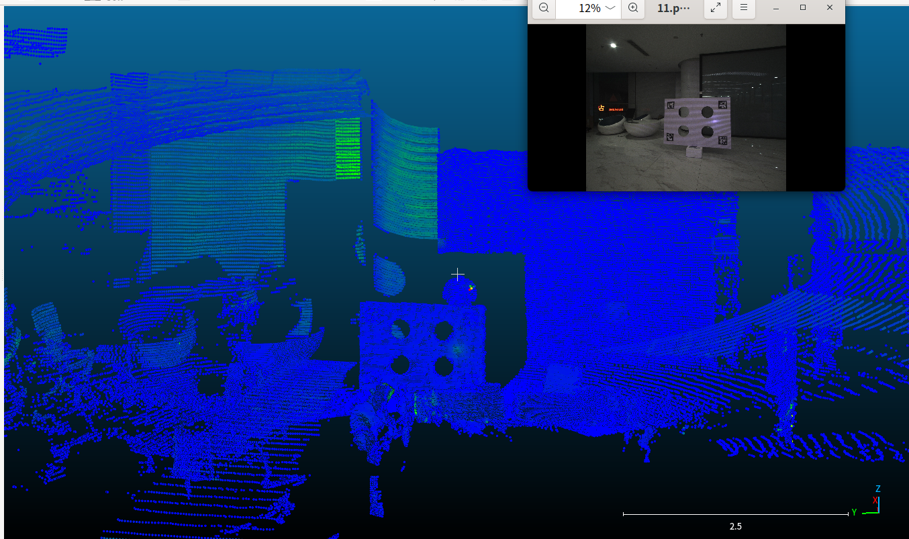
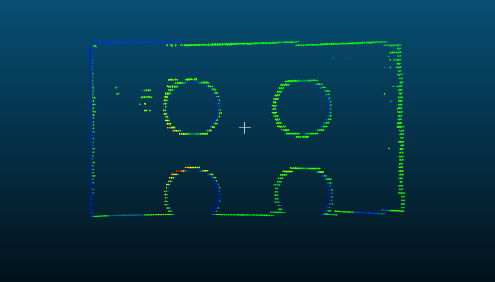
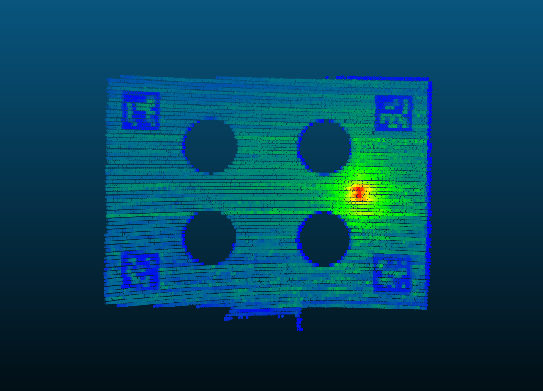
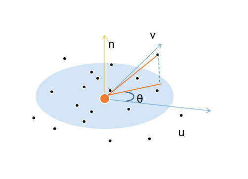
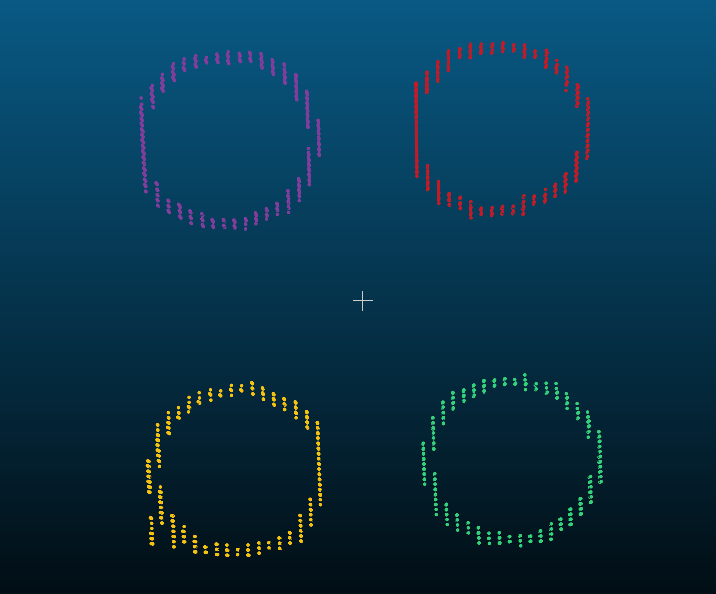
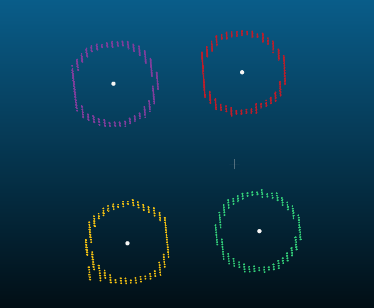

FAST-Calib-02 点云处理部分
本项目介绍
- FAST-Calib已经开源了代码，其基于ROS实现。为了方便使用，本项目将FAST-Calib的ROS依赖去除，可以直接在非ROS环境下进行编译使用，直接保存标定结果及各种可视化数据。方便各位在业务或者实验室项目中使用。
- 对FAST-Calib算法的各个步骤进行详细说明，介绍一些实际使用中可能遇到的问题。对论文中没有说明的步骤和要求进行补充。主要也是对自己学习FAST-Calib的一个总结。
- 希望能在FAST-Calib基础上，进一步优化算法，提高自动化。
点云处理部分
FAST-Calib算法中的点云处理部分，主要是为了从点云中提取出标定板上的四个圆孔的中心点的3D坐标。

主要的步骤如下：
- 先通过直通滤波（pcl的PassThrough Filter），其实也就是一个简单的范围过滤（也可以用pcd的CropBox），将点云中大概包含标定板的部分截取出来。
- 对截取出来的点云进行平面拟合（pcl的SACSegmentation），将点云中的平面部分提取出来。这里的平面主要是指标定板所在的平面。
- 对提取出来的平面点云进行边缘提取（pcl的BoundaryEstimation），得到标定板边缘的点云（包括四周边缘和圆孔的边缘）
- 对边缘点云，进行欧式聚类（pcl的EuclideanClusterExtraction），根据聚类的最大点数限制去掉了四周边缘点，同时得到4个圆孔的边缘点云。
- 对每个圆孔的边缘点云，进行圆拟合（pcl的SACSegmentation），计算的到圆孔的中心坐标
各个步骤详细说明
1. 直通滤波
这个部分其实我觉得是整个算法流程最不优美的部分，也是需要人工介入的部分。这个步骤需要通过人工调整距离范围，来截取包含标定板的点云。可以允许截取到一些其他点云（因为后续还有平面拟合和边缘提取），但是必须截取到完整的标定板，否则后续的步骤会出错。我在一开始使用的时候，范围阈值设置不对，导致标靶截取的结果如下图所示，导致后续的平面拟合和边缘提取出错。

错误原因可以看issue#48
经过直通滤波之后，还进行一次点云的下采样（pcl的VoxelGrid），减少点云数量，提高后续处理速度。 同时，后续的聚类步骤，实际还通过最大聚类点数阈值，去掉了标定板四周边缘的点云。这里的体素降采样，除了降低计算量之外，实际上也对聚类时的点云数量有影响。通过固定体素大小，对于尺寸差不多的标定板，边缘的数量会差不多。
这个步骤处理之后的点云结果如下图所示：

参数：
- 直通滤波的范围阈值：需要人工调整
- 体素降采样的体素大小：论文中使用的是0.005，即5mm
2. 平面拟合
这个步骤就极其简单了，直接利用pcl的SACSegmentation进行平面拟合，提取出点云中的平面部分。这里的平面主要是指标定板所在的平面。除了过滤掉一些离群点外，还能够估计出标定板平面的法向量，然后可以将标定板点云做变换，跟xy平面对齐。
跟XY平面对齐之后，会直接将对齐后的点云z坐标设置为0，即打成一个平面，后续的边缘提取和圆拟合都是在2D平面上进行的。
这个部分比较简单，这里介绍一下如何通过平面法向量，计算点云平面变换到xy平面的变换矩阵。
1 | // plane_coefficients是SACSegmentation计算得到的平面参数,前3个值是法向量 |
上面计算出旋转矩阵R之后，可以将标靶平面旋转到跟xy平面平行，只需要再计算出z轴的平移即可将其移动到z=0平面。
1 | // 应用旋转矩阵，将平面对齐到 Z=0 平面 |
相关参数：
- 平面拟合距离阈值：0.01，即1cm
3. 边缘提取
这部分其实也是直接用了pcl的函数pcl::BoundaryEstimation，计算点云的边缘点。论文里直接把这里面的算法步骤给写出来了，实际上代码里就是直接调用的pcl的函数。
1 | pcl::NormalEstimation<PointT, pcl::Normal> normal_estimator; |
关于pcl中BoundaryEstimation使用的算法，主要步骤如下：
- 计算每个点的法向量（法向量是BoundaryEstimation的输入参数，需要提前为点云计算好）
- 对每个点，通过其法向量，构建一个局部坐标系（u-v-n）。u为法向量n的垂直向量，v为n和u的叉积
- 对于每个点，检索其领域内的点，对这些点到该点的向量，投影到u-v平面上
- 计算投影向量的角度
- 对角度进行排序，并计算相邻角度的差值。差值计算公式：
\[ \begin{align*} \Delta \theta_k &= \theta_{k+1} - \theta_k, \quad k = 1, 2, \ldots, N-1 \\ \Delta \theta_N &= \theta_1 + 2\pi - \theta_N \end{align*} \]
- 如果最大角度差值大于设定的阈值，则该点被标记为边界点
可以想象，如果一个点不是边界点，那么其领域内的点应该是接近均匀分布的，也就是到该点的角度应该是连续的，不会中断。
这个角度的计算可以按照下图所示：

这部分的相关算法没有找到pcl的官方文档说明，但是源代码并不复杂，这里贴出源代码的链接：
pcl/features/impl/boundary.hpp
这部分的核心代码其实非常简单，line66 in boundary.hpp
1 | template <typename PointInT, typename PointNT, typename PointOutT> bool |
相关参数：
- 法线估计的搜索半径：0.03，即3cm
- 边界检测的搜索半径：0.03，即3cm
- 角度阈值：是π/4，即45度（论文中写的是25度，与代码中不符）
边缘提取结果

4. 欧式聚类
当时阅读论文的时候，一直有一个疑问，通过边缘提取得到的点云，除了四个圆孔的边缘之外，还有标定板四周的边缘点云，在不进行其他操作的情况下，为什么能够直接聚类得到四个圆孔的边缘点云？ 论文里没有说明，在代码里这部分也比较隐蔽。
实际上，在进行欧式聚类的时候，需要指定每个聚类的最大点数阈值和最小点数阈值。最小点数阈值主要是为了去掉一些离群点，最大点数阈值，实际上是起到了过滤标定板四周边缘点云的作用。
1 | // 5. 对边缘点进行聚类 |
相关参数：
- 聚类距离阈值：0.02，即2cm
- 最小点数：50
- 最大点数：1000
聚类结果

限制
这部分其实隐含这一些额外限制。在进行聚类的时候，距离阈值是2cm，也就是说，边界点云不能太过稀疏，否则会导致一个圆孔的边缘点云被分成多个聚类，最终无法正确识别出4个圆孔。
5. 边缘点云拟合圆
这部分论文和代码也有一点出入。论文中提到，点云的边界点可能会有扩张现象（从上图中也可以看出圆孔的边缘并不会是一个完美的正圆形），所以使用椭圆拟合（ellipse fitting）来获得更准确的圆孔圆心。 但是在代码中，实际上还是直接使用pcl的SACSegmentation进行圆拟合。
圆拟合之后，还额外计算了inlies点的距离误差（到圆心距离减去半径）均值来进一步过滤圆拟合的结果，去掉一些拟合不好的结果。
相关参数
- 圆拟合距离阈值：0.01，即1cm
- 最大迭代次数：1000
- 平均距离误差阈值：0.025，即2.5cm
圆拟合结果

总结
至此，在点云处理部分，已经成功从点云中提取出了4个圆孔的中心点坐标。 标定其实万变不离其中，都是找到两个传感器之间一些对应关系，然后通过这些对应关系计算变换矩阵。 现在已经在点云中找到了4个圆孔的3D坐标，那么，只要在图像中找到这四个圆孔对应的2D坐标，就可以进行PnP计算。 但是，实际上，由于我们在标定板上放置了ArUco码，所以我们可以直接通过ArUco码的位姿，估计出整个标定板的位姿。由于4个圆孔相对于标定板的位置是已知的，所以也就间接得到了4个圆孔在相机坐标系下的3D坐标。 这样，变换矩阵的求解就更简单，变成了已知多个3D-3D对应点对，求解刚体变换矩阵的问题，可以直接使用SVD方法求解出变换矩阵。如果对应点更多的话，也可以使用基于RANSAC或者迭代优化求解的方式进行求解。 下一篇文章将介绍如何在图像中检测ArUco码，并计算出标定板的位姿。